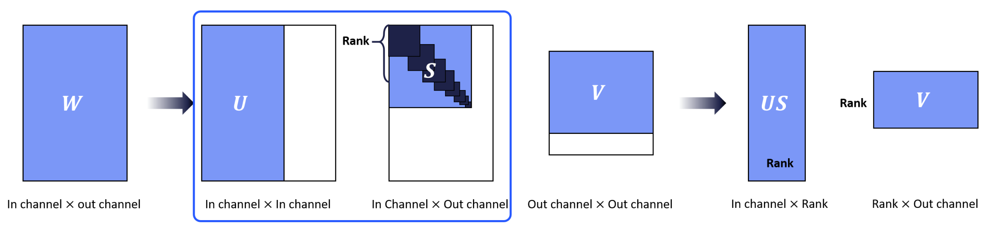

Compression Method
Structured Pruning
Pruning by Criteria
Difference of each pruning method is about measuring importance of filters in each layer. Filters in each layer will be automatically pruned based on certain criteria.
L2 Norm Pruning
L2-Norm is used to represent the importance of the corresponding filter. In other words, this method prunes filters based on the magnitude of weights.
Click the link for more information. (L2 Norm Pruning)

GM Pruning
Geometric Median is used to measure the redundancy of the corresponding filter and remove redundant filters.
Click the link for more information. (GM Pruning)

Nuclear Norm Pruning
The Nuclear Norm is the sum of the singular values representing the energy. It computes the nuclear norm on the feature map to determine the filter’s relevance. For this reason, a portion of the dataset is needed.
Click the link for more information. (Nuclear Norm Pruning)

Pruning by Channel Index
This function prunes the chosen filters of each layer through the index without certain criteria.
You can apply your own criteria to prune the model.
If the selected filters are redundant or less important, it will return a better performing model.
Click the link for more information. (Pruning By Index)

Filter Decomposition
Tucker Decomposition
Approximating the original filters by Tucker decomposition method.
This method decomposes the convolution with a 4D kernel tensor into two factor matrices and one small core tensor.
Click the link for more information. (Tucker Decomposition)

Singular Value Decomposition

Approximating the original filters by Singular value decomposition method.
This method decomposes the pointwise convolution or fully-connected layer into two pointwise or fully-connected layers.
Click the link for more information. (Singular Value Decomposition)
{kind=link}
CP Decomposition
Approximating the original filters by CP decomposition method.
This method approximates the convolution with a 4D kernel tensor by the sequence of four convolutions with small 2D kernel tensors.
Click the link for more information. (CP Decomposition)